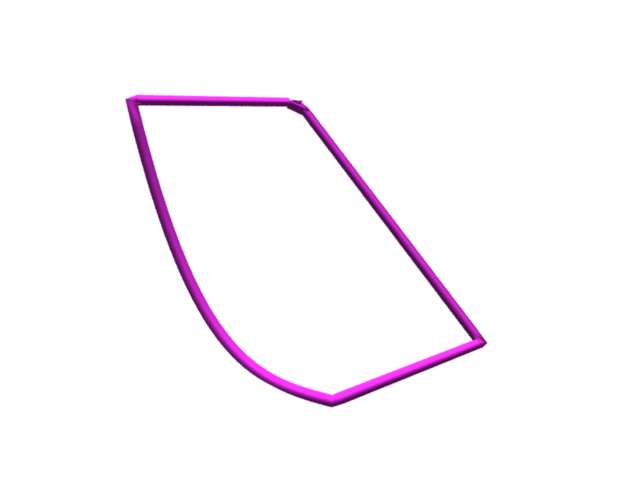
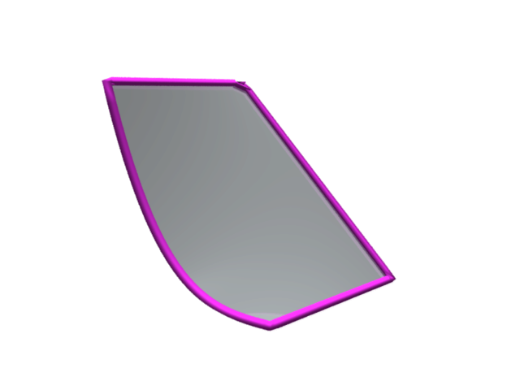
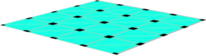
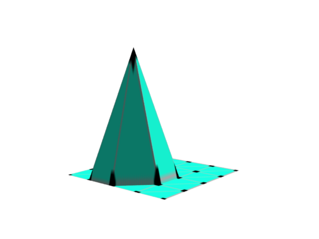
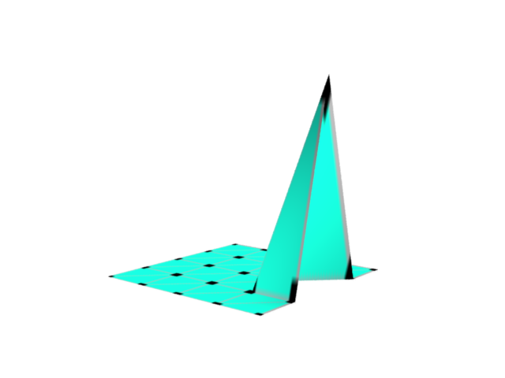
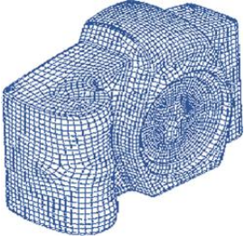

Consider a frame like the following dipped in a soap solution.

Frame
When you take it out of the solution, a thin film of soap water
will cling to it:

Soap film
We want to find the shape of the film. This is an important
quetion in architecture, where a structure must be given the most
natural shape to reduce stress.
It is known that a soap film will always occupy the position that
minimises its elastic potential energy. In the next section we
shall see how to express this mathematically.
If the surface is given by a function $u(x,y),$ then its
elastic potential energy is given by
$$
E(u) = \iint_R (u_x)^2 + (u_y)^2\, dxdy.
$$
This is to be minimised subject to the boundary condition that
the $u(x,y)$ must match the frame height at the boundary.
In general, this is a difficult/impossible problem to solve
analytically.
To proceed numerically, one starts with a
triangulation of the base.

Triangulation
Then the aim is to find the value of $u(x,y)$ at the
vertices. Let $c_j$ denote the value of $u(x,y)$ at the
$j$-th vertex.
Since the target function involves $u_x$
and $u_y$, we need to somehow approximate them using only
the values at the vertices. For this we choose a set of basis
functions, one for each vertex. It is constructed by "pulling
up" the vertex to a height 1, while leaving all the other
vertices at height 0. Here is one example where the vertex is not
a boundary vertex:

A basis function
Here is another example, this time for a boundary vertex.

Another basis function
Notice that the graph of each basis function is a plane over over
each triangle, and hence we may write a basis
function $\phi_j(x,y)$ as
$$
\phi_j(x,y) = \alpha_{ij} + \beta_{ij}x + \gamma_{ij} y \mbox{
for } (x,y)\in T_i.
$$
for suitable numbers $\alpha_{ij},$ $\beta_{ij}$
and $\gamma_{ij}$. Here $T_i$'s are the triangles of
the triangulation. Also, notice that $\alpha_{ij}, \beta_{ij},
\gamma_{ij}$'s are zero if the $j$-th vertex is not part
of $T_i$. Thus, most of these numbers are actually zero.
Then we can approximate $u(x,y)$ by
$$
u(x,y) = \sum_j c_j \phi_j(x,y).
$$
So
$$
u_x(x,y) = \sum_j c_j\beta_{ij} \mbox{ for } (x,y)\in T_i^\circ.
$$
Similarly for $u_y(x,y).$
$$
E(u) = \sum_i \iint_{T_i} (\sum_j c_j \beta_{ij})^2 + (\sum_j c_j\gamma_{ij})^2
= \sum_i |T_i| \{ (\sum_j c_j \beta_{ij})^2 + (\sum_j c_j\gamma_{ij})^2 \},
$$
where $|T_i|$ denotes the area of $T_i.$
Thus,
$$
E(u) = \bc' M\bc,
$$
where $M$ is the PD matrix with $(j,j')$-th entry given
by
$$
m_{jj'} = \sum_i |T_i| (\beta_{ij}\beta_{ij'} + \gamma_{ij} \gamma_{ij'}).
$$
Suppose that the last $k$ of the $c_j$'s are
known frame heights. Partition $\bc$
as $(\bc_1,\bc_2).$ Then $\bc_2$ is known,
and $\bc_1$ is to be chosen to minimise $E(u).$
Let us partition $M$ accordingly as
$$
M = \left[\begin{array}{ccccccccccc}M_{11} & M_{12}\\M_{21} & M_{22}
\end{array}\right].
$$
Then
$$
\bc' M\bc = \left[\begin{array}{ccccccccccc}\bc_1' & \bc_2'
\end{array}\right]\left[\begin{array}{ccccccccccc}M_{11} &
M_{12}\\M_{21} & M_{22}
\end{array}\right] \left[\begin{array}{ccccccccccc}\bc_1\\\bc_2
\end{array}\right] =
\bc_1' M_{11}\bc_1 + 2\bc_1' M_{12}\bc_2 + \bc_2' M_{11}\bc_2.
$$
Differentiating w.r.t. $\bc_1$, and equating to zero, we get
$$
M_{11}\bc_1 + M_{12}\bc_2 = \bz,
$$
or
$$
\bc_1 = -M_{11} ^{-1} M_{12} \bc_2.
$$
This shows that the problem always has unique solution.
However,
there is a practical difficulty. To get a reasonable
approximation we need the number of vertices to be pretty
large. In our example, the vertices are in a rectangular array formed
by subdividing the sides of the base. If we use 100 subdivisions
in both directions, then the number of vertices is $101^2,$
of which $99^2=9801$ are interior vertices. Thus, we need to
solve $9801$ equations in as many unknowns! For many real
life problem we need even more vertices:

Many vertices are needed to capture the
nooks and corners.
However, notice that $M_{11}$ is an extremely sparse
matrix. Each row contains just 6 nonzero entries. So one should
use Gauss-Seidel method here.
The project is to solve this problem with 50 subdivisions for
each side. The base is the unit square. The boundaries are the
graphs of the functions $0, $ $x,$ $1$
and $x^3.$
Comments
To post an anonymous comment, click on the "Name" field. This
will bring up an option saying "I'd rather post as a guest."